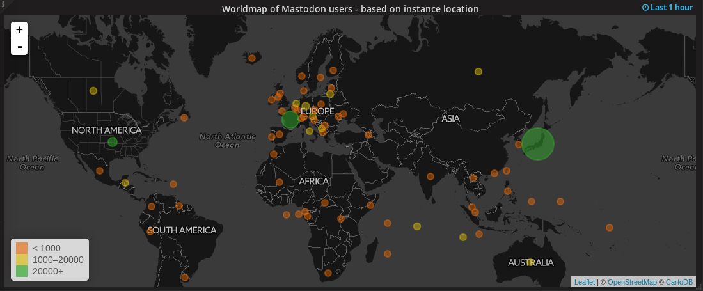

Mammut vs Vogel
Das verteilte soziale Netzwerk Mastodon
Ich: rixx / @rixx@chaos.social
Disclosure
Admin von chaos.social
Mastodon
Quelloffenes, dezentrales soziales Netzwerk
Dezentralisierung durch Föderation
„Offenes Twitter mit 500 chars Zeichenlimit“

Lineare Timeline

Profiling für Werbung

Profiling für Werbung

Umgang mit Arschlöchern
Umgang mit Featurewünschen
Privacy
Alternativen
„Comparison of software and protocols for distributed social networking“
diaspora

identi.ca

pump.io

GNUsocial

Mastodon

OStatus
Ansammlung von offenen Protokollen
- Atom
- Activity Stream
- PubSubHubbub
- Salmon
- WebFinger
Föderation
[1,n] User pro Instanz
Entwicklung

Entwicklung

Länder
https://dashboards.mnm.social/
Länder
https://dashboards.mnm.social/
Benutzung
Toots, Boosts, Favs
Instanzgrenzen überwinden
Privacy, NSFW, CW
Mobile Clients: Tusky, Amaroq
Timelines
User
Lokal
Global
Instanzen
Instanzwahl ist wichtig
Selber hosten?
Instanzen – Föderation – Symbolbild

Quelle: https://radar.amberstone.digital/
Instanzen
- Chaos
- chaos.social
- social.troll.academy
- mastodon.chaospott.de
- Top
- pawoo.net (jp)
- mstdn.jp (jp)
- mastodon.social
- friends.nico (jp)
Instanzen
- anticapitalist.party
- oulipo.social
- tenforward.social
Linksammlung
- https://instances.mastodon.xyz/list
- http://www.unmung.com/mastoview
- https://radar.amberstone.digital/
- https://dashboards.mnm.social/
Yay? Nay?
Kleine Community, laufende Entwicklung
Offener Standard, offene Software, Selbstbestimmung
THE END